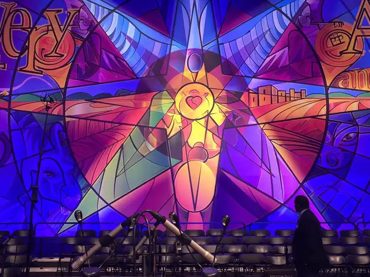

Advent has become one of my most cherished seasons of the year.
The songs that draw us into the reality that our savior is coming, the anticipation, the sparks of light appearing on the horizon, the thinking of others and plotting and planning to help bring a little joy to the world…
This is just one section of Concordia College’s massive Christmas concert banner.

It is a magnificent undertaking, and as the concert progresses, different portions of the banner are highlighted, so that the audience is always seeing a different element of the artwork — including sections that were in the shadows earlier and become “suddenly visible,” depending on the song and its emphasis. Note, above all, the very center of the mural — baby Jesus and his heart, flanked by his parents, Mary and Joseph.
During this time of year, there is a great pulling back that happens to me. The concerts and Advent programs start it all off, and I find myself clinging to this anticipation, wanting to draw it out, feeling the need to absorb every bit of what God wants to reveal to me in this anticipatory time, not just about myself but about others and what he wants me to focus on in the time I have left on this good earth.
As meaningful as it’s become, I also have found that the deeper I go with Advent, the more emotion of every kind arises. Along with the beauty and peace, I also feel more intensely the spiritual battle waging, sometimes invisibly, but other times, very visibly.
I am aware that this good news that is on its way will not be as warmly embraced by all; that for some, the babe in the manger brings the kind of justice that is not welcomed and is even scorned.
I feel the wrath of the forces that despise our Lord, and the closer we get to the day of light, the more the threatened darkness revolts.
I don’t dwell on these things, but I am aware — very aware — and I carry all this with me throughout the season: the joy, peace and anticipation, as well as the clawing of the netherworld that resists the light.
It does not disturb me to the point of robbing me of my joy. It is simply an awareness that heightens my appreciation for the light all the more.
What about you? Is Advent and the approaching season all bliss? Or do you feel the dichotomy too of what this good news means to those who oppose light? Is it all poinsettias and evergreen, or is the tension at which I’ve hinted entwined – or something in between or altogether different? What does this season elicit in you at this time in your life?
No matter what “goes down” for you in these days before Christmas, there’s ever reason to feel hopeful, and to focus on that above all. Remember, we are the light of the world, because of Him. Let us not lose sight of this light, no matter what.
“Your kindness shall be known to all. The Lord is near.” (Phil 4:5)